Chemie
Zum Verständnis dieses Artikels sind folgende Seiten hilfreich:
 Dieser Artikel stellt Programme zum Themenkreis "Chemie" vor, die in den Paketquellen vorhanden sind, oder zumindest unter Ubuntu genutzt werden können - Ergänzungen sind immer willkommen!
Dieser Artikel stellt Programme zum Themenkreis "Chemie" vor, die in den Paketquellen vorhanden sind, oder zumindest unter Ubuntu genutzt werden können - Ergänzungen sind immer willkommen!
Periodensystem¶
Kalzium¶
Kalzium ist ein interaktives Periodensystem und Teil des KDE-Bildungsprojektes. Unter KDE4 ist der Funktionsumfang von Kalzium nochmal deutlich erweitert worden, z.B. um einen Molekülbetrachter und einen Gleichungslöser.
gPeriodic¶
Ein einfaches GTK-Programm ist gPeriodic  , das ein Periodensystem und Daten zu den Elementen in Form von Stichwortlisten anzeigt:
, das ein Periodensystem und Daten zu den Elementen in Form von Stichwortlisten anzeigt:
gperiodic (universe )
 mit apturl
mit apturl
Paketliste zum Kopieren:
sudo apt-get install gperiodic
sudo aptitude install gperiodic
gElemental¶
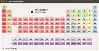 gElemental ist als Nachfolger von gPeriodic gedacht. Die Aufmachung ist optisch ansprechender und die Daten sind besser strukturiert. Die Datensätze beinhalten unter anderem historische, thermodynamische, elektrochemische und kristallografische Informationen und zitieren aus akademischen Fachquellen. Das Programm ist in den Paketquellen enthalten
gelemental (universe )
mit apturl
Paketliste zum Kopieren:
sudo apt-get install gelemental
sudo aptitude install gelemental
Strukturformeln¶
Editoren erleichtern die Arbeit mit komplexen Strukturformeln und erzeugen optisch ansprechende Grafiken.
BKChem¶
BKChem ist ein freier Editor für chemische Strukturformeln, dessen Aussehen eher schlicht gehalten ist. Er ist in Python geschrieben und in einer etwas älteren Version in den universe-Quellen enthalten. Das zu installierende Paket [1] nennt sich
bkchem (universe )
mit apturl
Paketliste zum Kopieren:
sudo apt-get install bkchem
sudo aptitude install bkchem
Mit dem Editor lassen sich Formeln beliebig zeichnen, C-Atome durch andere Elemente ersetzen, die Bindungen verändern und es stehen verschiedene Pfeilarten (auch flexible) zur Verfügung. Will man Bindungen nur in bestimmten Winkeln zeichnen, so gibt man die entsprechenden Winkelabschnitte an, die Richtung muss der Chemiker "mit der Hand" bestimmen. Auch werden Klammern, Rotationen in 2D und 3D und Spiegelungen unterstützt, sowie Vorlagen und die Möglichkeit, eigene Vorlagen einzubinden, geboten. Zu guter Letzt sorgt vor allem die Unterstützung vieler Dateiformate (SVG, PDF, EPS, PNG, ODG, MOL, CML) für die Einsatzmöglichkeit der erstellten in vielen verschiedenen externen Programmen.
Chemtool¶
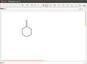 Chemtool ist ein recht einfaches und komfortabel zu bedienendes Zeichenprogramm. Man kann verschiedene Winkelraster als Zeichenhilfe auswählen, es gibt so ziemlich alle Linienarten für Bindungen zur Auswahl, die man als Chemiker braucht (z.B. zur Darstellung der Keilschreibweise, div. Mehrfachbindungen) und mit dem Textwerkzeug lassen sich beliebige Atomgruppen in die Zeichnung einfügen (die Minisyntax wird angezeigt). Die erstellten Bilder lassen sich in verschiedenen Formaten exportieren.
chemtool (universe )
mit apturl
Paketliste zum Kopieren:
sudo apt-get install chemtool
sudo aptitude install chemtool
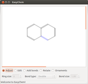
Easychem¶
Easychem ist ein GTK-Programm, dass sich praktisch wie ein Programm zur Erstellung von Vektorgrafiken bedienen lässt. Der Fokus liegt darauf Strukturformeln in Druckqualität zu erzeugen und so lassen sich die Grafiken auch direkt in PostScript-, PDF- und Xfig-Formate exportieren.
Zur Installation dient das folgende Paket [1]:
easychem (universe)
mit apturl
Paketliste zum Kopieren:
sudo apt-get install easychem
sudo aptitude install easychem
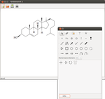
GChemPaint¶
GChemPaint ist ein Formeleditor für die Desktop-Umgebung GNOME 2. Die erstellen Formeln lassen sich in einem wiederverwendbaren XML-Format, aber auch als Bilder speichern. Geplant ist eine Integration in bereits vorhandene Programme wie z.B. die Textverarbeitungsprogramm Abiword. Zur Installation [1] benötigt man das Paket:
gchempaint (universe)
mit apturl
Paketliste zum Kopieren:
sudo apt-get install gchempaint
sudo aptitude install gchempaint
GNOME Chemistry Utils¶
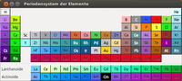
Die GNOME Chemistry Utils beinhalten kleine Hilfsprogramme wie einen Rechner für Molekulargewicht, 3D-Strukturbetrachter, ein Editor für Kristallstrukturen und ein Periodensystem. Sie wurden eigentlich für den Formeleditor GChemPaint entworfen, können aber auch separat vom Kernprogramm über das Paket
gcu-bin (universe)
mit apturl
Paketliste zum Kopieren:
sudo apt-get install gcu-bin
sudo aptitude install gcu-bin
installiert [1] werden. Sie lassen sich über das Menü "Anwendungen -> Bildung" starten.
XDrawChem¶
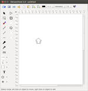 XDrawChem ist ein Strukturformeleditor, der an das kommerzielle ChemDraw angelehnt ist. Das Programm kann in verschiedenste Formate exportieren, darunter auch Bildformate. Das Programm bietet verschiedene kleine Werkzeuge zur Arbeitserleichterung an, welche allerdings meistens eine aktive Internetverbindung voraussetzen. So gibt es u.A. Molekül-Informationen über das Internet zu beziehen oder ein (grobes) 3D-Modell über einen Server zu erstellen. Praktisch sind auch die vielen, standardmäßig vorhandenen Molekülvorlagen, die sich erweitern lassen. Um XDrawChem zu benutzen, muss das Paket
xdrawchem (universe)
mit apturl
Paketliste zum Kopieren:
sudo apt-get install xdrawchem
sudo aptitude install xdrawchem
installiert [1] werden. Es lässt sich über das Menü "Anwendungen -> Bildung" starten.
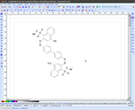
ACD/Labs ChemSketch¶
ACD/ChemSketch for Linux ist eine ältere Version des kommerziell vertriebenen ChemSketch, die gut unter Wine läuft. Nach einer Registrierung kann man sie kostenfrei herunterladen und zu privaten oder Bildungszwecken verwenden.
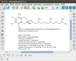
MarvinSketch¶
ChemAxon MarvinSketch ist ebenfalls eine proprietäre Anwendung, die jedoch dank Java plattformunabhängig ist. Die Bedienung unterscheidet sich nicht wesentlich von ChemDraw, so ist z.B. laden von Zeitschriftabhängigen Styles oder Suche einer Struktur in Onlinedatenbanken wie chemspider möglich. Nach einer Registrierung kann man das Programm zunächst einen Monat kostenfrei testen. Schulen und Universitäten können daneben eine verlängerbare kostenlose Lizenz über 2 Jahre erhalten mit der sich auch die calculator-plugins wie z.B. pKa-, logP- oder NMR-Vorhersage nutzen lassen.
 ist eine freie Software, deren Oberfläche mit dem etwas exotischeren fltk programmiert wurde. Der Programmierer sucht momentan nach Helfern, die Debianpakete in die Paketquellen einpflegen wollen.
ist eine freie Software, deren Oberfläche mit dem etwas exotischeren fltk programmiert wurde. Der Programmierer sucht momentan nach Helfern, die Debianpakete in die Paketquellen einpflegen wollen.3D-Moleküle¶
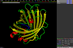
PyMOL¶
PyMOL ist ein Programm zur dreidimensionalen Darstellung von Proteinen und anderen Makromolekülen. Die Protein-Dateien können beispielsweise von der RCSB Website oder mit einem Plugin heruntergeladen und in PyMOL geöffnet werden.
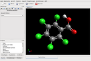
Avogadro¶
Avogadro ist ein Molekül-Editor für Computerchemie, Molekulardesign, Bioinformatik, Materialwissenschaften und verwandte Gebiete.
ghemical¶
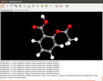
Ghemical ist eine Software für rechenorientierte Chemie in C++ geschrieben mit GTK Oberfläche. Die grafische Oberfläche unterstützt sowohl quantenmechanische als auch molekular-mechanische Modelle. Geometrie-Optimierungen, Moleküldynamik und eine große Anzahl von Visualisierungswerkzeugen unter Benutzung von OpenGL sind verfügbar.
ghemical (universe)
mit apturl
Paketliste zum Kopieren:
sudo apt-get install ghemical
sudo aptitude install ghemical
Chimera¶
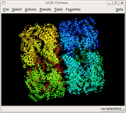
UCSF Chimera ist ein Molekülbetrachter, vergleichbar mit VMD und PyMOL. Chimera läuft unter den gängigen Betriebssystemen Linux, Windows und MacOS. Es kann sowohl atomare Modelle aus der Protein Data Bank (PDB) als auch Elektronendichtekarten (EDM) der Electron Microscopy Data Bank (EMDB) darstellen. Von der Bedienung ist es intuitiver als VMD zu benutzen. Chimera beherrscht die üblichen Darstellungsmodi wie z.B. Comic, Atomar und Oberfläche. Tutorials und Bildmaterial sind in großem Umfang auf der Projektseite vorhanden.
Datenauswertung¶
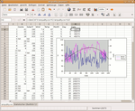
Gnumeric¶
Gnumeric ist ein GTK-Programm zur Tabellenkalkulation, dass jedoch auch gut zur statischen Analyse und zum Fitting von Graphen verwendet werden kann. Des Weiteren können alle Grafiken in Vektorformate (SVG, PDF) gespeichert werden und Tabellen nach LaTeX exportiert werden.
QtiPlot/sciDAVis¶
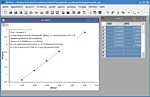 QtiPlot ist ein Datenanalyse- und Plotter-Programm. Es ist freie Software und kann im Quellcode von der offiziellen Homepage heruntergeladen werden. Der Hersteller bietet zudem einen kommerziellen Dienst zur Erstellung von Binärpaketen und Support für diese an. Die Besonderheit an QtiPlot ist, dass es weitgehend mit dem proprietären und teuren Origin kompatibel ist und sich auch sehr ähnlich bedient.
Ein fehlerbereinigter Fork von QtiPlot ist sciDAVis, dass die Entwicklung als Community-Projekt wieder aufnehmen möchte.
Spektroskopie¶
MestReNova¶
Der Hersteller Mestrelab Research bietet plattformunabhängige Programme zur Auswertung von Datensätze aus der NMR-Spektroskopie (auch Vorhersage auf Basis von Moleküldaten) und Massenspektrometrie (auch gekoppelte LC/GC/MS) an. Mit Hilfe einer Versionsübersicht  können DEB-Pakete für Ubuntu heruntergeladen werden, die bequem per Doppelklick installiert [3] werden können. Das Programm kann für 45 Tage getestet werden. Die grafische Oberfläche benutzt die Qt-Bibliotheken.
können DEB-Pakete für Ubuntu heruntergeladen werden, die bequem per Doppelklick installiert [3] werden können. Das Programm kann für 45 Tage getestet werden. Die grafische Oberfläche benutzt die Qt-Bibliotheken.
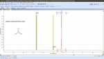
ACD/NMR Processor Academic Edition¶
Mit ACD/NMR Processor Academic Edition lassen sich NMR-Spektren auswerten. Sie läuft gut unter Wine und kann nach einer Registrierung kostenfrei herunterladen und zu privaten oder Bildungszwecken verwendet werden. Die ACD/NMR Processor Academic Edition beinhaltet auch eine passende ACD/ChemSketch Version.
Links¶
Scubuntu - Linux for Scientific Beings
- Paketübersicht ChemieDebian Science: Chemistry
- Paketübersicht des Debichem-Teams Linux4Chemistry
- umfangreiche Übersicht Linux and Chemistry
- Softwaredatenbank FSF Free Software Directory
- Kategorie Chemie SourceForge.net
- Chemie Projekte Chemie-Lernprogramme.de
 - Sammlung freier Chemie-Lernprogramme für die Schule, basierend auf Python und JavaScript
- Sammlung freier Chemie-Lernprogramme für die Schule, basierend auf Python und JavaScript
- Erstellt mit Inyoka
-
 2004 – 2017 ubuntuusers.de • Einige Rechte vorbehalten
2004 – 2017 ubuntuusers.de • Einige Rechte vorbehalten
Lizenz • Kontakt • Datenschutz • Impressum • Serverstatus -
Serverhousing gespendet von